Dia 5 de novembro comemora-se o Dia do Técnico em Agropecuária. a gincana em comemoração ao dia do técnico consiste na realização de diversas provas esportivas artísticas e culturais, envolvendo todos os alunos e professores do Colégio
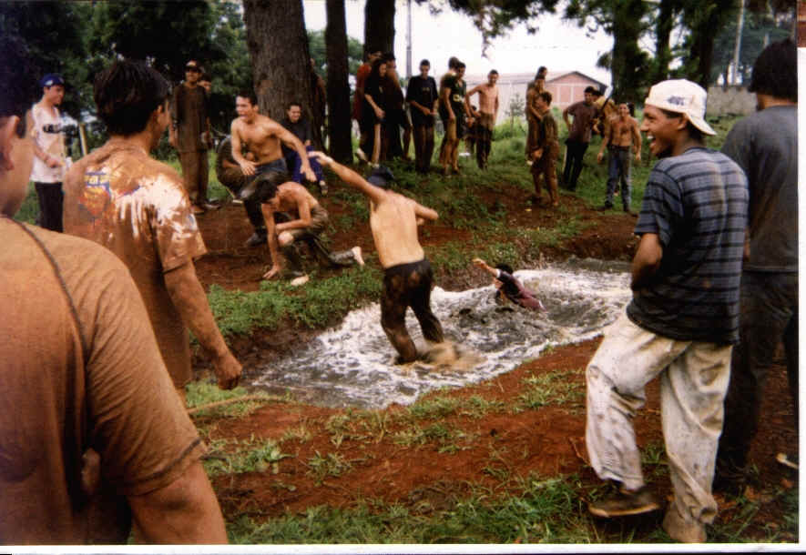
Cabo de Guerra
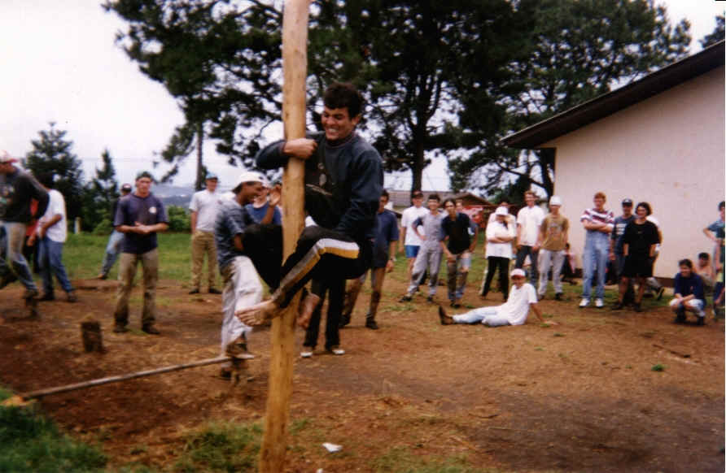
Pau de sebo
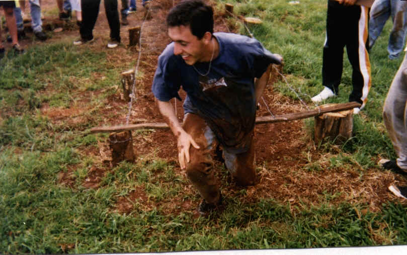
Rastejo
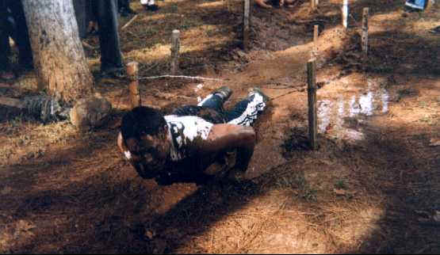
Rastejo
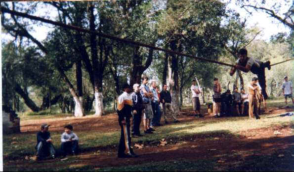
Pista de cordas
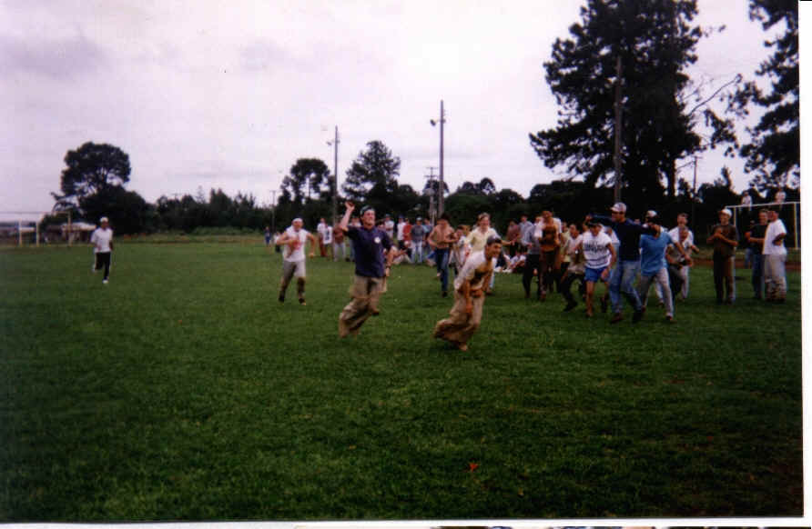
Corrida do saco
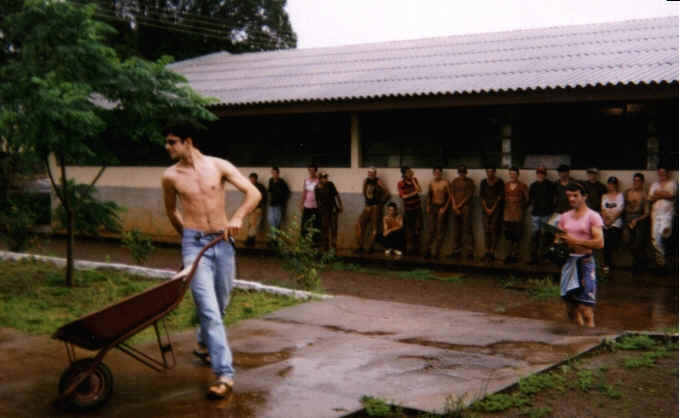
Os alunos João Paulo e Claudinei encenam
a música A dois passos do paraíso
1997
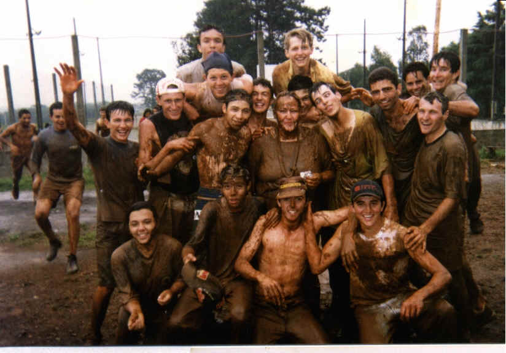
No tradicional banho de lama sobrou para Profª Jussara
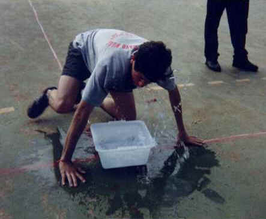
Circuito da farinha (Marcelo - Frigideira)
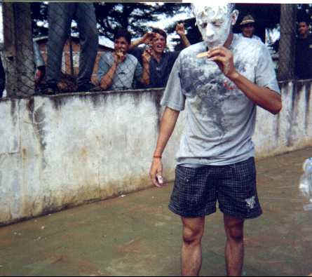
Circuito da farinha
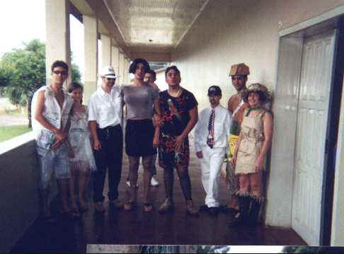
Casal simpatia e roupas recicladas - 2000
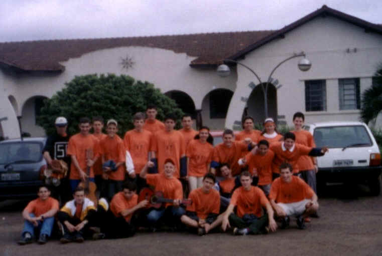
Equipe tribo do fogo (2002)
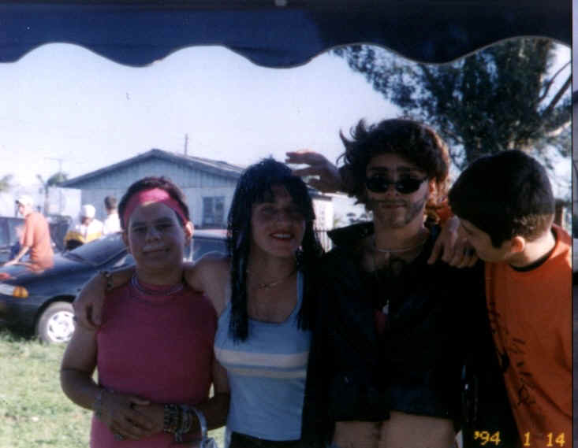
Pit Bitoca(Anderson), Miss Simpatia (Renato), Pit Bicha (Ronival) - 2003
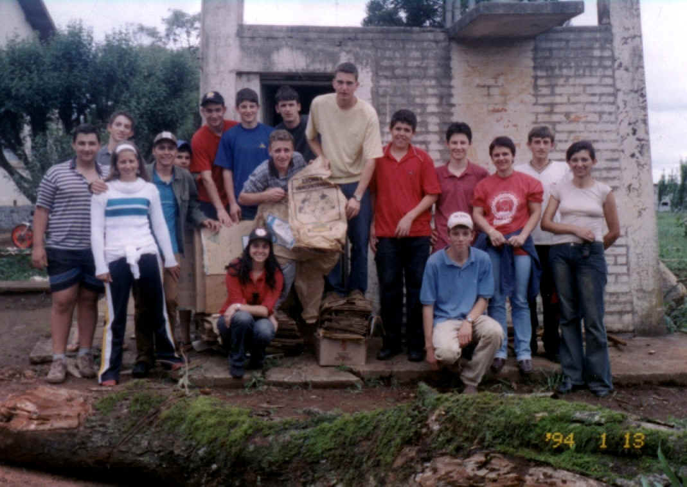
Arrecadação de Papel - Tribo do Fogo
Douglas, Marcel, Edina, Antonio, Anderson, Alencar, Diego, Renato, Juliano, Marcos, Gean, Tiago, Profª Laís, Jefferson, Profª Josemari, Agachados Profª Luciana e Bruno.
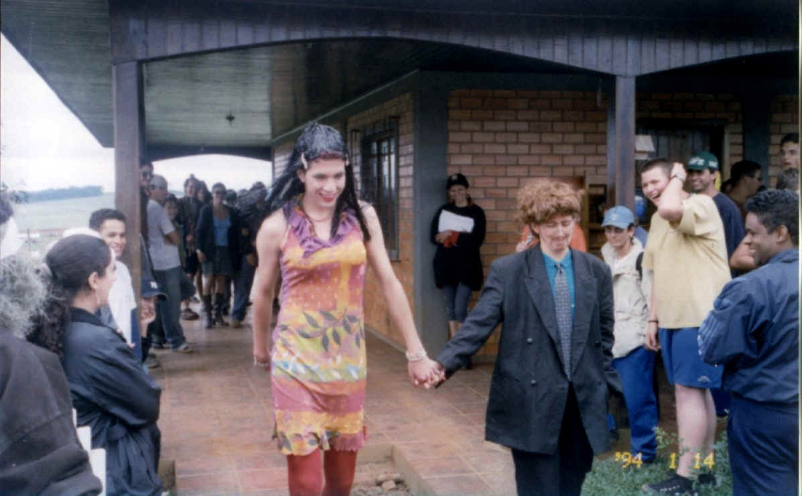
Casal Simpatia Abel e Édina
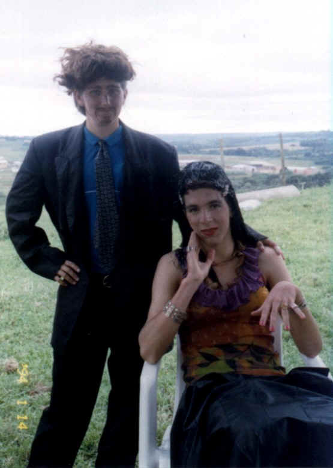
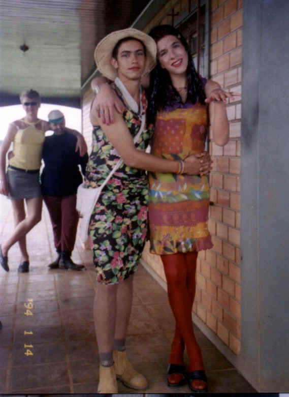
Abel e Gean e Diones e Doriele - Casal Simpatia
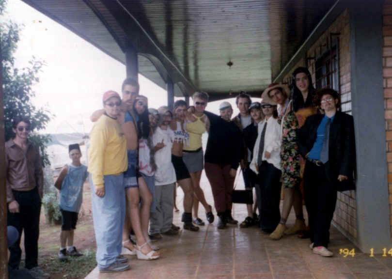
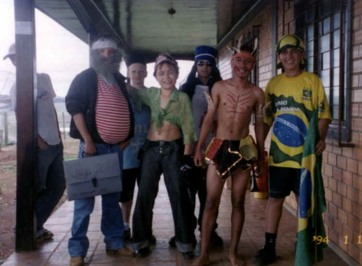
Mascotes